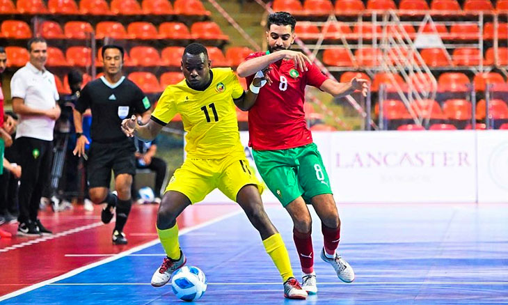

Chiquinho Conde: um soco no estômago dos analistas de sofá e teclado

Lorem Não restam dúvidas de que o seleccionador nacional dos Mambas, Chiquinho Conde, é, por essas alturas, uma das figuras centrais do futebol moçambicano. Não restam dúvidas, também, que ele é, por estas alturas, uma pessoa que merece todo o tipo de apoio, tendo em vista dar continuidade com tranquilidade necessária ao seu trabalho.
Ao serviço da selecção nacional, Chiquinho Conde conseguiu devolver aos moçambicanos a crença de que, com muito trabalho, é possível alcançar resultados extraordinários.
É com este treinador, por exemplo, que Moçambique voltou a disputar uma fase final do CHAN, prova destinada aos jogadores que actuam nos campeonatos internos. Mais do lá estar, sob seu comando, os Mambas cometeram a façanha de se qualificarem para os quartos-de-final, feito nunca antes alcançado pela selecção nacional.
Foi, sem dúvidas, um momento de viragem no futebol moçambicano que, não só anda sedento de vitórias, assim como das boas exibições e o devido respeito no concerto das nações.
Na sua folha de serviços, o antigo capitão dos Mambas conseguiu, 14 anos depois, qualificar Moçambique para o Campeonato Africano de Futebol (CAN), diga-se, no meio de muita descrença.
O país voltava a fazer parte das 24 melhores selecções do continente africano, um motivo de orgulho para os mais de 30 milhões dos moçambicanos. Chiquinho Conde, mais uma vez, voltava a estar na órbita e a escrever o seu nome nos anais da história do futebol moçambicano. Não era, afinal, para menos.
É que prestou um serviço valioso à nação não, talvez por ser melhor, mas sim porque acreditou no seu trabalho e soube capitalizar as oportunidades, claro, com a indispensável ajuda dos seus jogadores e da estrutura que gere o futebol nacional. Moçambique chegou a mais uma edição do CAN como um autêntico “outsider”. Ou seja, visto como um país da periferia do futebol africano.
Notícias relacionadas
-
 Guima: um Mamba com muito veneno por lançar24 de Janeiro, 2024
Guima: um Mamba com muito veneno por lançar24 de Janeiro, 2024 -

Faruk Ismael: “Queremos estar no CAN”24 de Janeiro, 2024
-
 Mambas focados para picar Tubarões Azuis24 de Janeiro, 2024
Mambas focados para picar Tubarões Azuis24 de Janeiro, 2024 -
 Mambas fora do CAN, mas com dignidade24 de Janeiro, 2024
Mambas fora do CAN, mas com dignidade24 de Janeiro, 2024 -
 Mambas focados para picar Tubarões Azuis24 de Janeiro, 2024
Mambas focados para picar Tubarões Azuis24 de Janeiro, 2024 -
 Mambas fora do CAN, mas com dignidade24 de Janeiro, 2024
Mambas fora do CAN, mas com dignidade24 de Janeiro, 2024 -
Mambas focados para picar Tubarões Azuis24 de Janeiro, 2024
-
Mambas fora do CAN, mas com dignidade24 de Janeiro, 2024